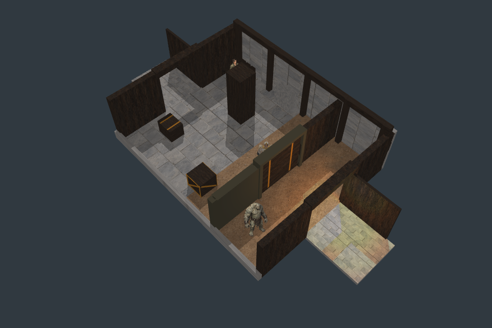
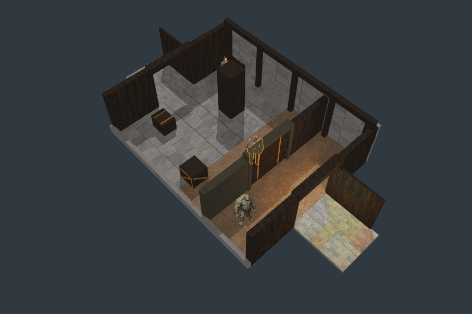
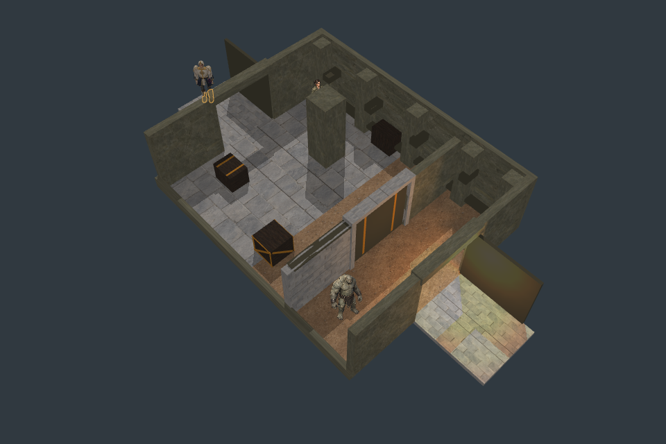
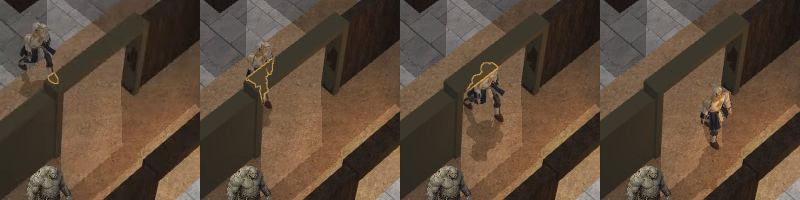

All 768 source samples and negative controls pass. Exposed-player images remain pixel-exact to OFF. Godot shipping target; Pixi harness. Full art and general occluder coverage remain unqualified.



The aid appears only on hidden portions of the player; it does not alter physical walls, light occlusion or shadow casters. Source diagnostic colors are separate from gameplay.

B: four verified native physical crops from the recorded crossing.Local composition p95 22.7ms; video is not a60fps proof. Full-viewport mask allocation is44.24MBnative /398.13MBfresh3× by format arithmetic; whole-app residency and production hardware unmeasured.
Next: increase the internal portal clearance from layout data for the2.7m monster, then refine the flat F01 pocket and faction materials. Report · Live test (local server required)